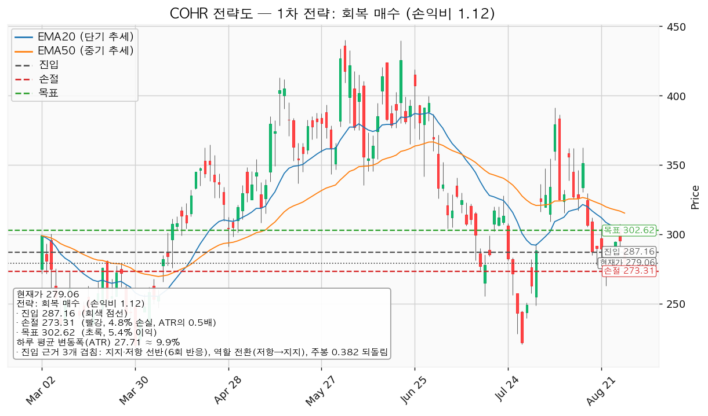
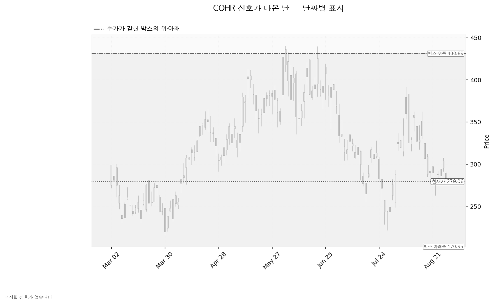
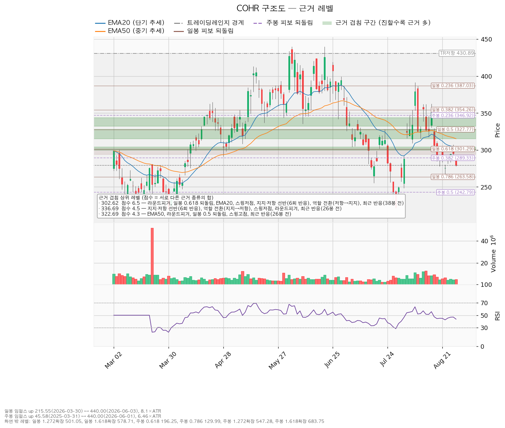

Coherent Corp. (COHR) 종목 리포트 · 2026-08-31
코히어런트(Coherent Corp, COHR)는 데이터센터·통신망에 들어가는 광트랜시버와 광학부품, 산업용 레이저, 화합물 반도체 소재를 만드는 미국 기업입니다.
핵심 3가격
| 구분 | 가격 | 판정 방식 | 현재 상태 |
|---|---|---|---|
| 폐기선 | 170.95달러 | 이탈 후 3거래일 내 회복 실패 + 반등에서 저항으로 확인 | 유지 중 |
| 회복선 | 287.16달러 | 일봉 종가로 회복한 뒤 되돌림에서 지지되는지 | 회복 대기 |
| 확인선 | 430.89달러 | 일봉 종가 돌파 후 되돌림 지지 확인 | 미돌파 |
근거: 폐기선은 횡보 박스의 아래쪽 경계, 회복선은 6회 반응한 지지·저항 선반과 저항이 지지로 역할이 바뀐 자리, 주봉 38% 되돌림선이 겹치는 가격대(286.08~289.33), 확인선은 박스의 위쪽 경계입니다.
종목 개요
| 항목 | 값 |
|---|---|
| 현재가(2026-08-28) | 279.06달러 (전일 295.39달러 대비 -5.53%) |
| 단기 추세선 EMA20 | 302.02달러 (현재가가 아래) |
| 중기 추세선 EMA50 | 315.20달러 (현재가가 아래) |
| RSI(14) — 과열·침체 정도 | 43.63 (중립 하단) |
| ATR — 하루 평균 변동폭 | 27.71달러 (주가의 약 9.9%) |
| 횡보 박스 | 170.95 ~ 430.89달러 (유효) |
| 국면 라벨 | 횡보 레인지 — 하단 사수 조건부 |
EMA20이 EMA50 아래에 있고 현재가는 그 둘보다 더 아래입니다. 중기 추세는 하락 방향이며, 국면 후보는 하락 진행으로 나왔습니다.
어느 구간을 보고 박스를 판정했는가: 조회된 일봉은 753봉이며, 엔진은 40봉·90봉·180봉 세 구간을 모두 시험했습니다. 가격이 경계 안에 머문 비율은 40봉 0.925, 90봉 0.978, 180봉 0.994로 180봉이 가장 높아 이 구간을 채택했습니다. 즉 최근 180거래일치 횡보를 본 것이며, 박스 폭은 하루 평균 변동폭의 9.38배로 넓은 편입니다.
박스 안쪽에서 무슨 일이 일어났는가: 지지 테스트는 6회 기록됐고(2026-01-09 저가 167.50, 평균 대비 거래량 1.41배 → 2026-02-05 저가 175.24, 2.26배 → 2026-02-17 저가 204.57, 0.77배), 테스트가 거듭될수록 매도 거래량은 증가 추세였습니다. 반면 박스 안 저점은 절상됐습니다. 상승봉 대 하락봉 거래량비는 0.94로 하락봉 쪽이 약간 더 무겁습니다. 이 세 관측이 서로 반대 방향을 가리켜 박스 내부 판정은 중립입니다. 매집 우위가 아니므로 지지 확인 매수 조건은 채워지지 않았고, 그래서 그 셋업은 산출되지 않았습니다.
직전 구간에서 어떻게 들어왔는가: 이 박스 직전 180봉의 구간은 52.48~145.00달러였고 가격은 그 위로 뚫고 올라와 지금 박스로 진입했습니다. 큰 상승 뒤에 만들어진 박스이므로 재축적(다시 모으는 국면)과 분산(넘기는 국면)의 갈림길이며, 박스 모양만으로는 어느 쪽인지 정해지지 않습니다.
세 시나리오
| 시나리오 | 조건 | 구조 해석 | 행동 |
|---|---|---|---|
| 상승 전환 | 287.16달러 종가 회복 후 지지 → 430.89달러 종가 돌파 | 속임수 하락 확인 → 강세 신호 → 되돌림 지지 → 상승 국면 | 287.16 회복·지지 확인 후 분할 진입, 430.89 돌파 시 비중 확대 |
| 횡보 지속 | 170.95달러를 지키며 430.89달러 아래에서 박스 유지 | 구조는 그대로 유지되는 국면입니다. 매물 소화에 시간이 필요할 뿐이며 부정적 신호가 아닙니다. | 신규 진입은 보류하고 세 가지를 추적합니다 — ① 지지 테스트마다 매도 거래량이 줄어드는지(현재: 증가) ② 저점이 계속 절상되는지(현재: 절상) ③ 상승할 때 거래량과 캔들 폭이 커지는지(현재: 상승봉/하락봉 거래량비 0.94) |
| 시나리오 폐기 | 170.95달러 이탈 후 3거래일 내 회복 실패 + 반등에서 저항으로 확인 | 재축적이 아니라 재분산 — 추가 저점 갱신 가능성을 엽니다 | 포지션 정리 후 새 매도 절정과 새 박스가 만들어질 때까지 관망 |
세 갈래 중 지금 확률적으로 가장 두꺼운 것은 횡보 지속입니다. 박스 내부 관측이 매집과 분산 어느 한쪽으로 기울지 않았고, 위쪽으로는 근거가 여러 겹 쌓인 저항대가 300~340달러 구간에 밀집해 있기 때문입니다.
조건부 셋업
엔진이 산출한 셋업은 1개입니다. 하락·중립 국면이므로 눌림 매수나 돌파 매수는 나오지 않았고, 저항을 종가로 회복할 때만 롱으로 전환하는 형태만 산출됐습니다.
| 항목 | 회복 매수 — 대표 셋업 |
|---|---|
| 방향 | 롱(매수) |
| 진입 | 287.16달러 (현재가 대비 +2.9%, 하루 평균 변동폭의 0.29배 거리) |
| 진입 근거 겹침 | 3.7점 / 근거 3개 — 지지·저항 선반(6회 반응), 역할 전환(저항→지지), 주봉 38% 되돌림. 겹침 구간 286.08~289.33달러 |
| 집행 손절 | 273.31달러 (진입 기준선에서 하루 평균 변동폭의 0.5배 아래) |
| 1차 목표 T1 | 302.62달러 — 전량(100%) 청산 |
| 목표 근거 겹침 | 6.5점 / 근거 7개 — 라운드피겨 300, 일봉 62% 되돌림, EMA20, 스윙저점, 지지·저항 선반(6회 반응), 역할 전환(저항→지지), 최근 반응(38봉 전). 겹침 구간 300.00~304.19달러 |
| 손익비 | 1:1.12 |
| 전 구간 손익비 | 1.12 (중간 목표가 없어 1차 목표와 동일) |
| 본전 손절 이동 후 하한 손익비 | 해당 없음 — 중간 레벨이 없어 분할 없이 단일 목표입니다 |
| 구조 증명도 | 회복 확인형 (가중치 1.0) — 저항을 종가로 회복한 뒤에만 들어가므로 진입가는 불리하지만 구조가 먼저 증명됩니다 |
대표 셋업 선정 이유: 이번에는 산출된 셋업이 하나뿐이라 손익비 순위와 대표 셋업이 자동으로 일치합니다. 엔진이 밝힌 선정 근거는 손익비 1.12 × 구조 증명도(회복 확인형) × 근거 겹침 3.7점입니다. 다만 손익비 1.12는 낮은 수준이며, 그 이유는 진입 근거 겹침 구간(286.08~289.33)이 목표 겹침 구간(300.00~304.19)과 가까워 위쪽 여유가 작기 때문입니다. 손실 폭 대비 이익 폭이 얇으므로 비중은 작게 가져가는 것이 합리적입니다.
손절 위치의 근거: 273.31달러는 진입 기준선에서 하루 평균 변동폭의 0.5배 아래입니다. 진입 근거가 겹치는 구간의 하단이 286.08달러이므로, 손절은 그 구간 안쪽이 아니라 아래에 놓여 있습니다. 다만 진입에서 손절까지의 거리는 -4.8%로 하루 평균 변동폭(약 9.9%)의 절반 수준이라, 통상적인 하루 등락만으로도 체결될 수 있습니다. 이 점이 손익비를 낮추는 요인이기도 합니다.

현재가 추격은 권장하지 않습니다 — 대기 좌표
287.16달러 회복이 확인되기 전이므로 현재가 279.06달러에서 따라 사는 것은 권장하지 않습니다. 기다릴 좌표는 다음과 같습니다.
| 대기 항목 | 값 |
|---|---|
| 진입 후보 레벨 | 259.57달러 (겹침 3.3점 / 근거 4개 — 스윙저점, 라운드피겨 260, 일봉 79% 되돌림, 최근 반응 4봉 전. 구간 255.14~263.58달러) |
| EMA20 투영 (5봉 후) | 302.02 → 292.98달러 |
| EMA50 투영 (5봉 후) | 315.20 → 308.65달러 |
이동평균 투영치는 현재가 279.06달러가 5거래일 동안 그대로 유지될 경우 이동평균선이 어디에 놓이는지를 계산한 값입니다. 주가 예측이 아닙니다. 시간이 지나면 이동평균선이 현재가 쪽으로 내려오면서 회복선까지의 거리가 줄어든다는 뜻입니다.
되돌림 — 어디까지 반납했는가
일봉과 주봉 모두 되돌림 계산의 기준이 될 상승 구간이 유효하게 잡혔습니다.
| 기준 | 상승 구간 | 구간 크기 | 주요 되돌림선 |
|---|---|---|---|
| 일봉 | 215.55달러(2026-03-30) → 440.00달러(2026-06-03) | 하루 평균 변동폭의 8.1배 | 38% 354.26 / 50% 327.78 / 62% 301.29 / 79% 263.58 |
| 주봉 | 45.58달러(2025-03-31) → 440.00달러(2026-06-01) | 하루 평균 변동폭의 6.46배 | 24% 346.92 / 38% 289.33 / 50% 242.79 / 62% 196.25 |
현재가 279.06달러는 일봉 62% 되돌림(301.29)과 79% 되돌림(263.58) 사이, 그리고 주봉 38% 되돌림(289.33) 바로 아래에 있습니다. 즉 3~6월 상승분의 3분의 2 이상을 반납했지만, 2025년 3월부터의 큰 상승분 기준으로는 아직 40%도 반납하지 않은 위치입니다. 되돌림선이 특히 촘촘히 모이는 294.11~301.29달러 구간(일반적으로 '골든포켓'이라 부르는, 되돌림이 멈추기 쉬운 자리)은 지금 현재가 위쪽의 저항대에 해당합니다.

날짜별 신호
이번 조회 구간에서 Wyckoff 이벤트(속임수 하락·속임수 상승·강세 신호·약세 신호)는 하나도 잡히지 않았습니다. 박스는 유효하게 판정됐고 엔진도 정상 작동했으므로 "판정 보류"가 아니라 실제로 표시할 신호일이 없다는 뜻입니다. 아래 차트가 회색 일색인 것은 그 때문입니다.
신호가 없다는 것 자체가 정보입니다. 박스 하단 170.95달러 근처에서 매도 절정과 그에 이은 속임수 하락이 나오지 않았고, 상단 430.89달러 근처에서 강세 신호도 확인되지 않았습니다. 국면 후보는 하락 진행이며, 박스 안 저점 절상과 지지 테스트 거래량 증가가 서로 상쇄돼 방향 판정이 아직 서지 않은 상태입니다.

지지·저항 (근거 겹침 상위)
점수는 서로 다른 근거 종류의 가중치 합입니다. 같은 종류가 여러 개 붙어도 한 번만 더해집니다. 점수가 높을수록 방어력이 두꺼운 가격대입니다.
| 가격 | 구간 | 점수 | 근거 | 현재가 기준 |
|---|---|---|---|---|
| 302.62 | 300.00~304.19 | 6.5 | 라운드피겨, 일봉 62% 되돌림, EMA20, 스윙저점, 선반(6회 반응), 역할 전환(저항→지지), 최근 반응(38봉 전) | 위 — 1차 목표 |
| 336.69 | 332.24~343.51 | 4.5 | 선반(6회 반응), 역할 전환(지지→저항), 스윙저점, 라운드피겨, 최근 반응(26봉 전) | 위 — 저항 |
| 322.69 | 315.20~327.78 | 4.3 | EMA50, 라운드피겨, 일봉 50% 되돌림, 스윙고점, 최근 반응(26봉 전) | 위 — 저항 |
| 287.16 | 286.08~289.33 | 3.7 | 선반(6회 반응), 역할 전환(저항→지지), 주봉 38% 되돌림 | 위 — 회복선·진입 |
| 259.57 | 255.14~263.58 | 3.3 | 스윙저점, 라운드피겨, 일봉 79% 되돌림, 최근 반응(4봉 전) | 아래 — 대기 진입 후보 |
| 241.40 | 240.00~242.79 | 2.6 | 라운드피겨, 주봉 50% 되돌림, 최근 반응(30봉 전) | 아래 — 지지 |
| 220.34 | 220.00~220.68 | 2.3 | 라운드피겨, 스윙저점, 최근 반응(22봉 전) | 아래 — 지지 |
| 170.95 | — | 1.2 | 박스 하단 | 아래 — 폐기선 |
주목할 점은 286.08달러와 304.19달러 두 선반이 모두 저항에서 지지로 역할이 바뀐 자리라는 것입니다. 286.08 선반은 가장 최근 거래일에도 반응이 있었고, 304.19 선반은 그 전날 반응이 있었습니다. 반면 332.24 선반은 지지에서 저항으로 역할이 바뀌었습니다. 즉 현재가 바로 위 300달러대는 예전에 지지였다가 지금은 저항으로 돌아선 구간이며, 이곳을 종가로 넘어서야 위쪽 여유가 생깁니다.

컨센서스 교차검증과 주도주 판정
| 항목 | 값 |
|---|---|
| 애널리스트 평균 목표주가 | 416.09달러 |
| 투자의견 | 매수(buy) |
| 후행 PER | 67.60배 |
| 예상 주당순이익 | 13.95달러 |
교차검증 결과 — 어긋납니다. 컨센서스 평균 목표주가 416.09달러는 박스 상단 430.89달러에 가까운 수준이고 의견도 매수입니다. 그러나 차트가 제시하는 실행 가능한 1차 목표는 302.62달러이며 그마저도 손익비 1.12에 그칩니다. 애널리스트 목표는 12개월 시계이고 이 리포트의 레벨은 수 주 단위 실행 좌표이므로 시계 차이를 감안하더라도, 컨센서스 목표를 근거로 지금 매수하는 것은 실행 조건과 맞지 않습니다. 후행 PER 67.60배는 이익 대비 주가가 이미 높게 매겨져 있음을 뜻하며, 추세가 하락으로 꺾인 국면에서는 가격 조정 폭이 커지기 쉬운 조건입니다.
주도주 여부 — 현재로서는 주도주 지위 후퇴로 판단합니다. 근거는 세 가지입니다. ① 6월 고점 440.00달러 대비 현재가 279.06달러로 상승분의 상당 부분을 반납했습니다. ② EMA20이 EMA50 아래에 있고 현재가는 그 둘보다 낮은 역배열입니다. ③ 최근 거래일 하락폭이 -5.53%로 하루 평균 변동폭의 절반을 넘었는데, 이 자리에서 매수세가 붙었다는 신호(속임수 하락 등)는 확인되지 않았습니다. 다만 박스 안 저점이 절상되고 있고 직전 구간을 위로 뚫고 올라온 이력이 있어 재축적 가능성은 열려 있습니다. 광통신 섹터 자체의 상대강도는 이 리포트 범위 밖이므로, 섹터 순위가 필요하시면 시황 분석을 함께 요청해 주십시오.
*본 자료는 정보 제공 목적이며 투자 권유가 아닙니다. 투자 판단과 그 결과에 대한 책임은 투자자 본인에게 있습니다.*